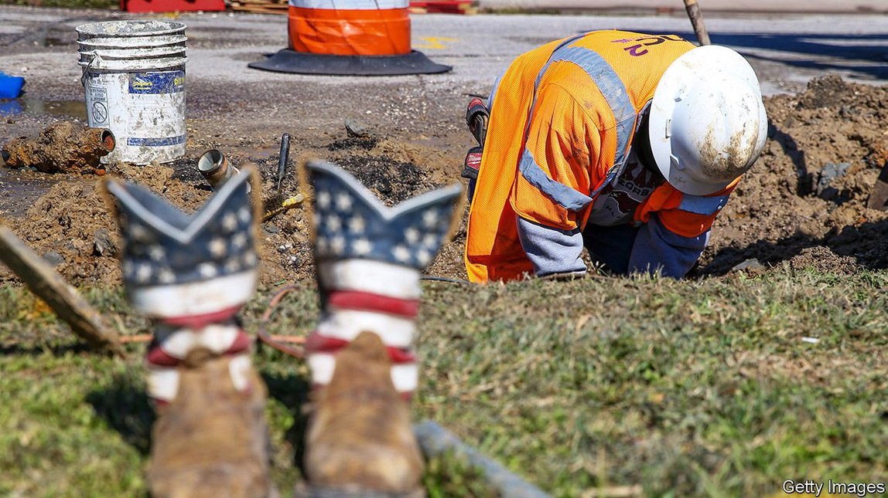

2021-06-09T18:07:00+00:00
基建年
如何（也许）能在预算内重建
詹姆斯·威尔逊线建设的经验教训
“这是一个独一无二的机会，”研究基础设施项目的经济地理学家傅以斌（Bent Flyvbjerg）说，“美国历史上前所未见。”他指的是拜登政府1.7万亿美元的基础设施计划。一群参议院共和党人“还价”1万亿美元。无论最终数字是多少，立法者如何确保这笔资金发挥最大的效力呢？
建设新项目和修复旧项目的必要性是没有争议的。糟糕的基础设施造成数万亿美元的增长损失。美国三分之一的桥梁存在结构缺陷。还需要像海堤和拦洪屏这样的新建筑来帮助减轻气候变化的影响。但几十年来，公共部门建设的生产率一直停滞不前，成本居高不下，在交通项目上尤为明显。从1960年代到1980 年代，建造一英里的州际公路所需资金的实际价值增长了三倍。美国地铁线路的成本通常是欧洲或亚洲典型项目的两到四倍。
以詹姆斯·威尔逊线（James Wilson line）为例——这是一个假想的铁路项目，以《经济学人》创始人的名字命名，成本用拜登提供的海量资金支付。甚至在破土动工之前，成本预测就十分离谱，预期收益被大幅拉高。成本效益分析是做了，但民选官员出于政治考虑无视了分析结果。傅以斌认为，这一切都会导致实施的是那些在纸面上看起来最好的项目，“而在其他条件相当的情况下，在纸面上看起来最好的项目就是那些成本被低估最多、收益被高估最多的项目”。
很快就出了新闻稿宣布威尔逊线将投建。声音响亮的各种施压团体立即要求做出昂贵的修改。它们坚持要求加上控制噪音的墙壁以及人行通道等附加设施，参与式民主的这种激情澎湃的展示增加了新的成本。这种反应吓坏了政府，于是它先发制人地采取昂贵的措施来减少诉讼的可能性。最近的一篇论文认为，这种对“公民发声”的践行——以及政府对此的恐惧——是导致高速公路建设成本飙升的一个重要原因。
该论文的作者之一莉亚·布鲁克斯（Leah Brooks）认为，1970年代的法律和社会变化为今天这种状况奠定了基础。那十年见证了房主协会的兴起，还推出了新的立法要求更多地考虑公民关切的问题。新的司法原则提高了公民起诉行政机构的能力。1969年通过的具里程碑意义的《国家环境政策法》（NEPA）带来了宝贵的环境保护举措。再加上最高法院的一项判决提高了公民起诉政府的能力，NEPA提供了一个“司法立足点”来反对新建筑——无论质疑者的担忧是否真正出于保护环境的愿望。
到了签合同建造威尔逊线的时候了。最佳做法是根据成本、速度和由内部监督团队打出的技术评分来分配合同。但不幸的是，起草合同的机构没有足够多有资质的人员来对施工方案做全面审查。出价最低者赢得了工作，这在美国是最普遍的情况。然而在胜出后，承包商很快添上了更多的成本，政府再度力不从心。由于无法管理如此大的项目，它最终只能依赖承包商和顾问，而这帮人把威尔逊线的关键部分搞砸了，需要花大价钱返工。机构间争夺势力范围的战争和协调上的问题使得局面更加恶化。
对于威尔逊线的地下部分，建造商选择的方法简直是自讨苦吃。它的车站，就像纽约市最近建成的第二大道地铁站一样，都太大了。而且，威尔逊线的建造商并没有采用所谓的“明挖回填”的方法在街上挖出车站——这是丹麦等脚踏实地的地方（更便宜）的规范做法。他们选择从隧道内开挖。研究交通基础设施成本的阿龙·李维（ Alon Levy）表示，之所以会做出这种叫人看不懂的选择，是因为美国未能效仿其他国家。傅以斌的评论更不留情，他说美国的“孤岛心态”如此严重，连花时间琢磨一下外来想法再拒绝掉都不肯。
怎样做才能让像想象中的威尔逊线这样的项目不偏离轨道呢？州和联邦机构可以确保团队有足够的能力来审查多个项目和管理承包商。然而，过于谨慎又可能适得其反：纽约的地铁建设成本之所以会飙到天文数字，严苛的要求是原因之一。
更先进的施工操作也有帮助。铁路车厢和地铁站等部件的标准化可以减少差异，从而缩短时间并降低成本。透明度和问责制也很重要。负责维护价值超过3000亿美元的水坝和堤坝的陆军工程兵团记录了成本数据却不公开。布鲁克斯说它们应该被公布。为了减轻公民发声的影响，她还建议立法就一些基础设施项目设立诉讼限制。
特朗普实施了对NEPA的改革，他说这将加速建设，但也去掉了一些有价值的环境保护。拜登政府正在考虑撤销这些变化。NEPA不仅被用来质疑造成污染的工业设施，还被用来质疑可再生能源项目，而且环境诉讼的威胁提高了基础设施成本。拜登大可以撤销特朗普的改革——但他应该考虑做出一些自己的改革。
2021-06-09T18:07:00+00:00
Infrastructure year
How to build back under budget (maybe)
Lessons from the construction of the James Wilson line
“THIS IS A unique opportunity,” says Bent Flyvbjerg, an economic geographer who studies infrastructure projects. “There hasn’t been anything like it in the history of the United States.” He is referring to the Biden administration’s $1.7trn infrastructure plan. A group of Senate Republicans have countered with a $1trn offer. Whatever the final number, how can lawmakers make sure the money goes as far as possible?
The need to build new projects and repair old ones is not in dispute. Poor infrastructure costs trillions in foregone growth. A third of America’s bridges are structurally deficient. New structures, such as seawalls and storm barriers, are needed to help mitigate the effects of climate change. But productivity in public-sector construction has stagnated for decades and high costs abound, particularly where transport is concerned. The money needed to construct a mile of interstate highway rose threefold in real terms between the 1960s and the 1980s. American subway lines often cost between two and four times as much as typical projects in Europe or Asia.
Consider the James Wilson line, a hypothetical rail project named after The Economist’s founder and paid for with an influx of Biden bucks. Even before ground is broken, the cost forecasts are wildly inaccurate and prospective benefits dramatically inflated. A cost-benefit analysis is done, but elected officials discard its results in favour of political considerations. Mr Flyvbjerg argues that this all leads to the projects that look best on paper being implemented, “and the projects that look best on paper are the projects with the largest cost underestimates and benefit overestimates, other things being equal”.
Soon, a press release goes out announcing the construction of the Wilson line. Immediately vocal pressure groups demand expensive changes. By insisting on additional features like walls to contain noise and paths for pedestrians, this stirring display of participatory democracy adds new costs. Spooked by the response, the government takes expensive, pre-emptive steps to reduce the likelihood of litigation. A recent paper argues that such exercises of “citizen voice”—and governments’ fear of them—are a big cause of soaring highway-construction costs.
Leah Brooks, one of the paper’s authors, argues that legal and social changes in the 1970s set the stage for this situation. That decade saw the rise of homeowners’ associations, as well the introduction of legislation requiring more consideration of citizens’ concerns. New judicial doctrines increased the ability of citizens to sue executive agencies. The National Environmental Policy Act (NEPA), a landmark piece of legislation passed in 1969, delivered valuable environmental protections. Combined with a Supreme Court decision that enhanced citizens’ ability to sue the government, NEPA provided a “judicial toehold” from which to oppose new construction—whether or not the challengers’ concerns are genuinely motivated by a desire to protect the environment.
It is now time for a contract to be awarded for construction of the Wilson line. Best practice is to give out contracts on the basis of cost, speed, and a technical score determined by an in-house oversight team. But unfortunately the agency drawing up the contract does not have enough qualified staff to conduct a full review of construction proposals. The lowest bidder wins the job, as is typically the case in America. After winning, however, the contractor quickly tacks on additional costs, and the government is again in over its head. Unable to manage such a big project, it ends up relying on contractors and consultants who botch key segments of the Wilson line, requiring expensive do-overs. Inter-agency turf battles and co-ordination problems worsen the situation.
For the Wilson line’s underground sections, its builders choose to do things the hard way. Its stations, like those of New York City’s recently built Second Avenue subway, are unnecessarily large. And instead of digging the stations out from street level in a so-called “cut-and-cover” approach, which is the (cheaper) norm in sensible places like Denmark , the Wilson line’s builders choose to mine them from within a tunnel. Alon Levy, who studies transit infrastructure costs, says such mystifying choices come about because America has failed to copy other countries. Mr Flyvbjerg goes further: America has such an “island mentality”, he claims, that it doesn’t even consider outside ideas for long enough to reject them.
What can be done so that projects like the imaginary Wilson line do not go off the rails? State and federal agencies can ensure that teams have enough capacity to review multiple projects and to manage contractors. Being too punctilious can backfire, though: New York’s exacting requirements are partly responsible for the astronomical costs of subway construction there.
More advanced construction practices can also help. Standardisation of components like railway cars and subway stations can reduce variation, thereby shortening timelines and lowering costs. Transparency and accountability are vital as well. The Army Corps of Engineers, which is responsible for maintaining more than $300bn-worth of dams and levees, records cost data but does not make them public. Ms Brooks says it should. To mitigate the effects of citizen voice, she also suggests a statute of limitations on litigation for some infrastructure projects.
Donald Trump implemented NEPA reforms which he said would speed construction, but which also did away with some valuable environmental protections. The Biden administration is considering rolling back these changes. NEPA has been used to challenge not just polluting industrial facilities but renewable energy projects as well, and the threat of environmental lawsuits adds to infrastructure costs. Mr Biden is free to roll back Mr Trump’s changes— but he should consider making some of his own.■
2021-06-09T18:07:00+00:00
基建年
如何（也許）能在預算內重建
詹姆斯·威爾遜線建設的經驗教訓
“這是一個獨一無二的機會，”研究基礎設施項目的經濟地理學家傅以斌（Bent Flyvbjerg）說，“美國歷史上前所未見。”他指的是拜登政府1.7萬億美元的基礎設施計劃。一群參議院共和黨人“還價”1萬億美元。無論最終數字是多少，立法者如何確保這筆資金髮揮最大的效力呢？
建設新項目和修復舊項目的必要性是沒有爭議的。糟糕的基礎設施造成數萬億美元的增長損失。美國三分之一的橋樑存在結構缺陷。還需要像海堤和攔洪屏這樣的新建築來幫助減輕氣候變化的影響。但幾十年來，公共部門建設的生產率一直停滯不前，成本居高不下，在交通項目上尤為明顯。從1960年代到1980 年代，建造一英里的州際公路所需資金的實際價值增長了三倍。美國地鐵線路的成本通常是歐洲或亞洲典型項目的兩到四倍。
以詹姆斯·威爾遜線（James Wilson line）為例——這是一個假想的鐵路項目，以《經濟學人》創始人的名字命名，成本用拜登提供的海量資金支付。甚至在破土動工之前，成本預測就十分離譜，預期收益被大幅拉高。成本效益分析是做了，但民選官員出於政治考慮無視了分析結果。傅以斌認為，這一切都會導致實施的是那些在紙面上看起來最好的項目，“而在其他條件相當的情況下，在紙面上看起來最好的項目就是那些成本被低估最多、收益被高估最多的項目”。
很快就出了新聞稿宣布威爾遜線將投建。聲音響亮的各種施壓團體立即要求做出昂貴的修改。它們堅持要求加上控制噪音的牆壁以及人行通道等附加設施，參與式民主的這種激情澎湃的展示增加了新的成本。這種反應嚇壞了政府，於是它先發制人地採取昂貴的措施來減少訴訟的可能性。最近的一篇論文認為，這種對“公民發聲”的踐行——以及政府對此的恐懼——是導致高速公路建設成本飆升的一個重要原因。
該論文的作者之一莉亞·布魯克斯（Leah Brooks）認為，1970年代的法律和社會變化為今天這種狀況奠定了基礎。那十年見證了房主協會的興起，還推出了新的立法要求更多地考慮公民關切的問題。新的司法原則提高了公民起訴行政機構的能力。1969年通過的具里程碑意義的《國家環境政策法》（NEPA）帶來了寶貴的環境保護舉措。再加上最高法院的一項判決提高了公民起訴政府的能力，NEPA提供了一個“司法立足點”來反對新建築——無論質疑者的擔憂是否真正出於保護環境的願望。
到了簽合同建造威爾遜線的時候了。最佳做法是根據成本、速度和由內部監督團隊打出的技術評分來分配合同。但不幸的是，起草合同的機構沒有足夠多有資質的人員來對施工方案做全面審查。出價最低者贏得了工作，這在美國是最普遍的情況。然而在勝出後，承包商很快添上了更多的成本，政府再度力不從心。由於無法管理如此大的項目，它最終只能依賴承包商和顧問，而這幫人把威爾遜線的關鍵部分搞砸了，需要花大價錢返工。機構間爭奪勢力範圍的戰爭和協調上的問題使得局面更加惡化。
對於威爾遜線的地下部分，建造商選擇的方法簡直是自討苦吃。它的車站，就像紐約市最近建成的第二大道地鐵站一樣，都太大了。而且，威爾遜線的建造商並沒有採用所謂的“明挖回填”的方法在街上挖出車站——這是丹麥等腳踏實地的地方（更便宜）的規範做法。他們選擇從隧道內開挖。研究交通基礎設施成本的阿龍·李維（ Alon Levy）表示，之所以會做出這種叫人看不懂的選擇，是因為美國未能效仿其他國家。傅以斌的評論更不留情，他說美國的“孤島心態”如此嚴重，連花時間琢磨一下外來想法再拒絕掉都不肯。
怎樣做才能讓像想象中的威爾遜線這樣的項目不偏離軌道呢？州和聯邦機構可以確保團隊有足夠的能力來審查多個項目和管理承包商。然而，過於謹慎又可能適得其反：紐約的地鐵建設成本之所以會飆到天文數字，嚴苛的要求是原因之一。
更先進的施工操作也有幫助。鐵路車廂和地鐵站等部件的標準化可以減少差異，從而縮短時間並降低成本。透明度和問責制也很重要。負責維護價值超過3000億美元的水壩和堤壩的陸軍工程兵團記錄了成本數據卻不公開。布魯克斯說它們應該被公布。為了減輕公民發聲的影響，她還建議立法就一些基礎設施項目設立訴訟限制。
特朗普實施了對NEPA的改革，他說這將加速建設，但也去掉了一些有價值的環境保護。拜登政府正在考慮撤銷這些變化。NEPA不僅被用來質疑造成污染的工業設施，還被用來質疑可再生能源項目，而且環境訴訟的威脅提高了基礎設施成本。拜登大可以撤銷特朗普的改革——但他應該考慮做出一些自己的改革。